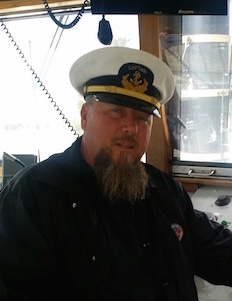

OWNERS
Private and corporate hull owners who want the boat ready, the log clean, and a captain who answers the phone at anchor. Charter revenue, a season in the San Juans, or the crossing you keep postponing.
DEPARTURE · GLACIER BAY · 58°30′N 134°25′W · ROUTE LOG 004
Captain Chuck Brown runs charters, deliveries and helm assignments the way he has since 1980: planned on paper, checked twice, and sailed by the man holding the ticket. The route below runs Alaska down the Pacific coast, through the Panama Canal, up the Atlantic side. Scroll, and you are aboard.
Call the captain +1 714 625-2980 Follow the route ↓
NOT A HOBBYIST. EXPERIENCE COUNTS!
PORT 01 · Juneau, Alaska · 58°18′N 134°25′W
Crewed guest charters from a day under a glacier to a week in the Inside Passage. Corporate groups, families, fishermen with opinions. The boat is your charter product; running it on time, safe, and spotless is my job. Day boats to week-long expeditions, fishing vessels, motoryachts, expedition hulls.
GUESTS ARRIVE BY SEAPLANE. THE CREW ARRIVES EARLIER.
PORT 02 · Victoria, British Columbia · 48°25′N 123°22′W
Standing assignment, relief days, or the whole season at your helm. Owners get a captain who answers for the boat the way a principal answers for a firm: logbooks current, provisioning honest, systems understood before they fail, and nobody surprised at 0600.
RELIEF CAPTAIN FOR SHIPS WITH FULL-TIME CREWS WELCOME.
PORT 03 · Puget Sound, Washington · 47°36′N 122°21′W
Coastal and blue-water delivery, voyage planning from first waypoint to arrival line, weather routing checked against your insurer's appetite. Deliveries from 32 to 130 feet, Alaska to the Bahamas. Every passage closes with a photo log: where we stopped, what we saw, what we fixed.
DEPART WITH A PLAN. ARRIVE WITH PICTURES.
PORT 04 · San Francisco Bay, California · 37°49′N 122°25′W
Handling, docking, heavy-weather work, navigation, radar, and the electronics that shipped with your boat, taught on your boat, on your water, at your pace. Ebb tides under the Bay Bridge are the best classroom in California. Finish with an insurance-accepted sign-off that says you can take the helm yourself.
CERTIFICATE ON COMPLETION. YOUR UNDERWRITER WILL ASK.
PORT 05 · Newport Beach, California · 33°36′N 117°54′W — home port
Maintenance calendars that get met, systems that get logged, crew that get managed, stores that get counted. A boat left alone for a season bills twice what a managed boat costs for a year. I run the yard, the technicians and the budget so the owner sees invoices that make sense and a boat that starts.
NEWPORT · SAN DIEGO · MARINA DEL REY · LONG BEACH
PORT 06 · San Diego, California · 32°42′N 117°13′W
Scopes read line by line before steel is cut, schedules chased weekly, invoices questioned the day they arrive, quality controlled by a man who spent 23 years holding the wrench. San Diego and Newport yards know the difference between a captain who walks the yard and one who mails. I walk.
A GOOD REFIT ENDS WITH THE BUDGET, NOT THE LAUNCH.
TRANSIT · Panama Canal, Balboa · 8°58′N 79°37′W
Every transit needs a captain whose documents pass the first time. Below is the full endorsement page. It is verifiable in sixty seconds at the USCG portal, and every insurer on this route has looked.

USCG MASTER OF STEAM OR MOTOR VESSELS · 500 GT / 200 GRT · INTERNATIONAL · #2776127
Check the ticket yourself, it costs nothing: USCG Merchant Mariner Credential Verification →
NON-SMOKER · ENROLLED IN A MARITIME RANDOM DRUG & ALCOHOL TESTING CONSORTIUM
PORT 07 · Fort Lauderdale, Florida · 26°07′N 80°08′W
Buying on the Florida side or selling to someone who is: engines loaded hot and cold, gearcases under way, stabilizers at full roll, radar and electronics run against the checklist, and a sea trial log the surveyor and underwriter can actually read. A bad boat talked out of a good buyer is the cheapest service in the market.
A HONEST TRIAL LOG CHEAPER THAN THE CLAIM.
PORT 08 · Charleston, South Carolina · 32°46′N 79°56′W
Licensed captain for lenders and recovery agents when a boat has to move today, quietly and legally. Vessels located, boarded, made seaworthy enough, moved, and secured at the delivery dock with an inventory and a photo log on file. No drama, no lien disputes, no scratched gelcoat.
MOVED BEFORE THE OWNER FINISHES COFFEE.
WAYPOINT · Cape Hatteras, North Carolina · 35°15′N 75°32′W — where the Gulf Stream leaves the shelf
Thirty years of miles are worth different things to different people. Here is how this passage gets used.
Private and corporate hull owners who want the boat ready, the log clean, and a captain who answers the phone at anchor. Charter revenue, a season in the San Juans, or the crossing you keep postponing.
Listing brokers need sea trials that document the vessel honestly and deliveries that protect the closing. A signed trial log moves deals; a bad one at the dock ends them.
Underwriters and loss adjusters get a credential verifiable in sixty seconds, consortium drug testing, training sign-offs on your insured's handling, and survey sea trials that read like engineering, not optimism.
When collateral has an engine and a location, you need a licensed master, not a deckhand with a credit card. Boats moved, secured, logged, and turned over clean.
ALSO FINE TO BE INVITED LATE. MOST OF MY WORK STARTS THAT WAY.
DEPARTURE CHECKLIST · Four items, in order
STEP 01 · 5 MINUTES
Phone, dates, vessel, route or job. +1 714 625-2980 or chuck@westcoastcaptain.com. You will get a real answer about availability, not a maybe.
STEP 02 · ONE EVENING
Resume, references, credential number for the USCG verification portal, consortium enrollment. Insurers: send your coverage forms early, paperwork is not a problem here.
STEP 03 · BEFORE ANYTHING MOVES
Written day rate or project scope: what is included, who pays for fuel, dockage, haul-out and the delivery crew. One page, no surprises at closing.
STEP 04 · THE PART THAT MATTERS
Boat handled, guests impressed, systems watched, log kept. The photo diary arrives before the invoice does.
INLAND WATERWAYS · Questions asked at every dock
A USCG Master of Steam or Motor Vessels, 500 Gross Tons / 200 Gross Register Tons, International, credential number 2776127, on a current U.S. Merchant Mariner Credential with Able Bodied Seaman (Unlimited) and Radar Observer (Unlimited). Any insurer, lender or owner can verify it free at the USCG Merchant Mariner Credential Verification portal.
The International endorsement covers undocumented vessels up to 80 meters / 265 feet to any port in the world. Delivery history runs 32 to 130 feet: the Alaska and British Columbia inside passage, every port worth stopping at on the California, Oregon and Washington coast, the Panama Canal route to the Gulf of Mexico, and Florida, Georgia and both Carolinas on the East Coast.
That is the part most captains leave to someone else. Before his ticket he spent 23 years as a mechanic: diesel plants, AC/DC electrical, hydraulics and crane work. On a Chuck Brown delivery the person debugging the alternator at 2 a.m. is the same person who signed the log at noon.
Non-smoker, enrolled in a maritime random drug and alcohol testing consortium, references and a full resume on request. Underwriters generally accept credentialed, consortium-tested masters, and he is used to the paperwork side of that conversation.
Peak-season charters and Alaska or Mexico deliveries: four to six weeks if you can. Relief days, sea trials and sign-offs he often fits inside your surveyor's or yard's schedule. Call +1 714 625-2980 and ask; a date is a date, not a maybe.
ARRIVAL · Newport Beach, California · 33°36′N 117°54′W
The phone rings, and the man who answers it is the man who will be at your helm.
OR WRITE: chuck@westcoastcaptain.com · NEWPORT BEACH · SAN DIEGO · MARINA DEL REY · LONG BEACH